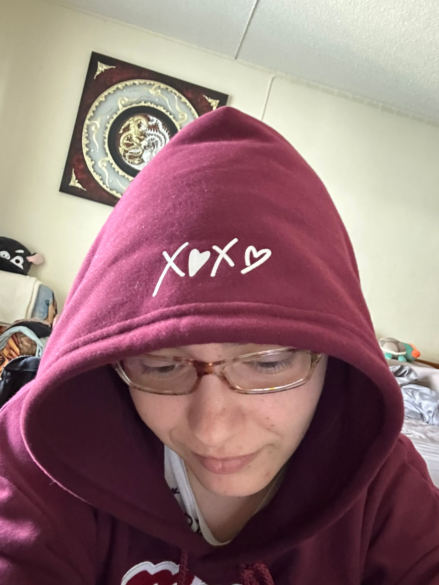

My Resume
- Arantxa Reinoso Garayalde
- D.O.B: 20 April 1991
- Spanish
- Web develope (trainee)

Sumany
Currently developing my studies as Front end engineer and Full Stack.
Education
- High School Certificate (Science focus)
- Graduate in Translation and Interpreting at Complutense University
- Master in Restaurant Management
Work experience
- Team Leader in CLBS (2020 - currently)
- Owner business Voom (2019 - 2020)
- Bartender and waitress (2008 - 2019)
- Internship as Translator DE-EN in Zooplus (2014)
- English as Second Language Teacher (2008 - 2010)
Skills
- Languages:
- Spanish
- English
- German
- Thai
- Team Work
- Team Management and conflict solving
Other achievements
Touch typing (average speed 80 words per minute.